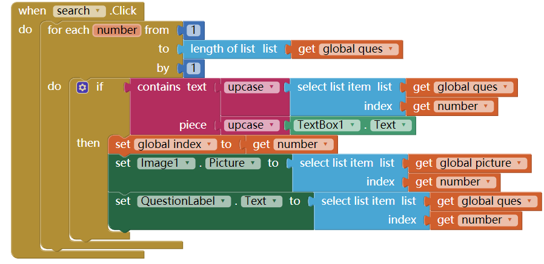
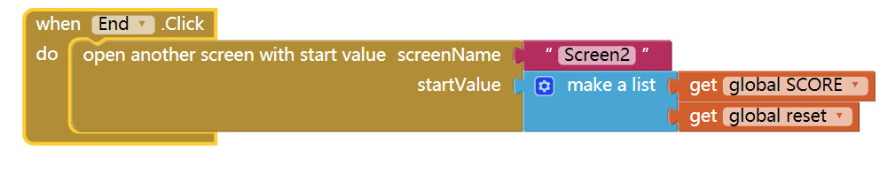
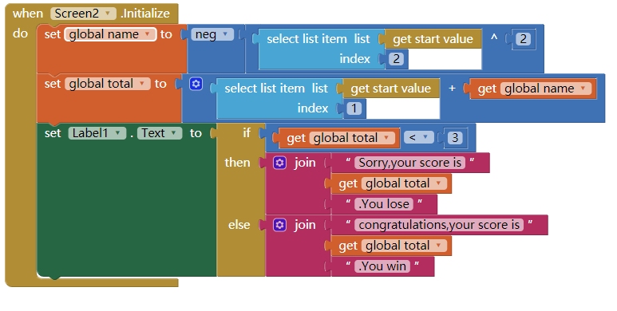
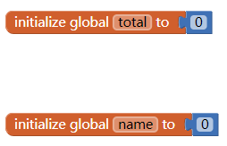
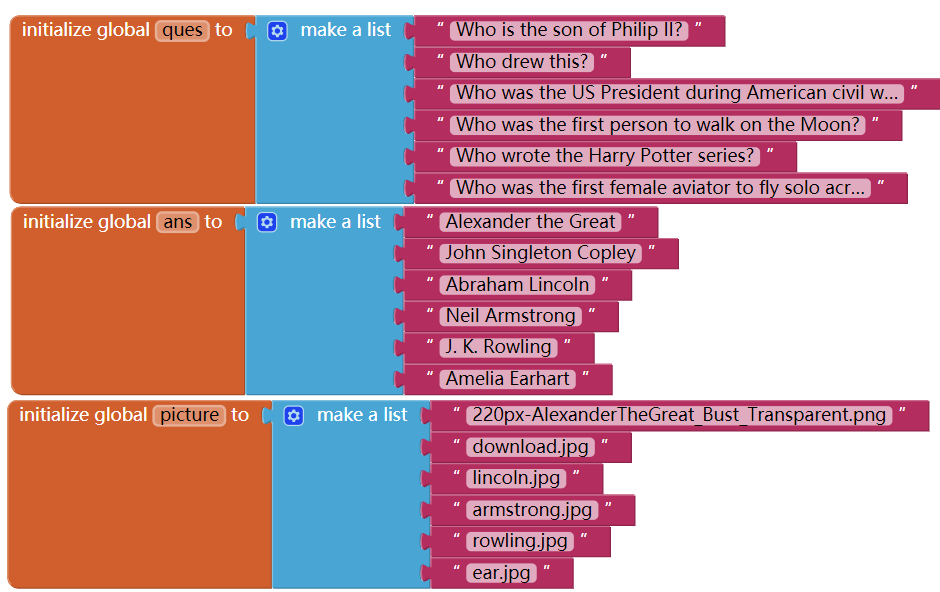

1)Describe your solution for the second project that added a Search button. Provide a screenshot of the search button click code that uses a complex algorithm with loops and lists. Why was a loop necessary?

My solution for the second project that added a Search button is that just use a loop algorithms to repeat the searching code that if the text of question piece textbox text,that set global index to get the list number and set question and image to the index.The loop was necessary because I need it to search for all the question in the variable lists.
2) Write AP text-style pseudocode for a linear search that searches through a list to find an item x. It should display found if the x is equal to an item in the list.
X< item
{To search every item from the list
if get item=x display found}
3)Give brief descriptions of the enhancements you added to your app for the third project, a quiz topic of your own choosing. Provide screenshots of important blocks and describe how you used them to solve certain programming problems.



I have make a scoring system of the quiz app.When you click on the end button, it will send a start value to the screen 2,then when screen 2 is initialize,it will calulate the value and give you the score.With the list blocks,I can use it to make 2 list of value that use for calculate the score,when the screen 2 initialize,it will the 2 variables in the screen2 would automatically get the list of value from screen one.
4)To practice for the Create project prompt, grab a screenshot of a program code segment from your project that implements an algorithm that includes two or more algorithms within it and includes mathematical and/or logical concepts. An ideal algorithm is a procedure that you created that includes calls to other procedures that you created, where at least one of those includes math or logic (ifs or loops). Describe how each of the two algorithms within the bigger algorithm functions independently as well as in combination to form a new algorithm. Basically, answer 2c!

For the algorithm I create,that which 3 variable contain a list of values.So for the search button,it will search for the question variable and it's list of values.So when you press on the search button,it will go for a loop each number from 1 time to length of the list of the question variable by 1 time(because if the value is not here,then you can't get the value whatever you try)so it will search for every values of the question variable.Then if the text of the question variable(index get "number" is the number of the loop going to search,which is the length of the question variable,so when it search for the second time,it will get you the index 2)contain piece to text box 1 text,then set global index get number(which is the number that it found out the value=input),if the index change,question,answer,picture variable would change at the same time.Then set the other variables to get the index which is same as number(loop)/index variable.
These algorithm work well by setting up all the variable to keep updating when you get the value you want.